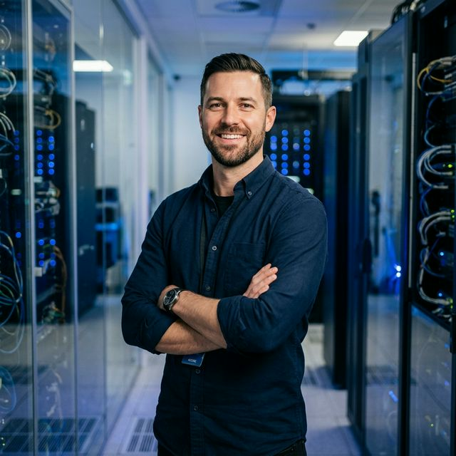

FOUNDER & CEO
이선우 (Lee Sun-woo)
로봇소프트 코퍼레이션의 창업자이자 대표이사. 소프트웨어로 세상을 움직이겠다는 비전 아래, AI 로보틱스 생태계의 혁신을 이끌고 있습니다.
Core Engineering Team
LEAD ROBOTICS ENGINEER
Elena Park
MIT 로보틱스 랩 출신. 실제 환경에서의 다중 로봇 협업 제어 및 충돌 방지 시스템 설계 분야의 핵심 전문가입니다.

CLOUD INFRA ARCHITECT
Justin Kim
AWS 출신 인프라 전문가. 초저지연 로봇 제어를 위한 엣지 컴퓨팅 및 전역 클라우드 제어 망을 설계하고 운영합니다.

FULL-STACK DEVELOPER
정소라 (Sora Jung)
로봇 관제 인터페이스 시스템의 사용자 경험을 설계하고 실시간 데이터 시각화 엔진을 개발합니다.
COMPUTER VISION ENGINEER
Michael Wu
객체 인식 및 SLAM 기술 고도화를 통해 로봇의 눈을 담당하는 인식 알고리즘을 연구합니다.

MOTION CONTROL EXPERT
장지희 (Chloe Jang)
로봇 팔의 정밀 제어 및 협동 로봇의 안전 메커니즘 프로토콜을 담당하고 있습니다.

SIMULATION SPECIALIST
Kenji Tanaka
디지털 트윈 환경 구축 및 가상 시뮬레이션을 통한 로봇 소프트웨어 검증을 수행합니다.
BACKEND ENGINEER
최세준 (Se-jun Choi)
수천 대의 로봇에서 발생하는 원격 데이터 로그를 안전하게 처리하는 분산 서버 시스템을 구축합니다.
QA & SAFETY ENGINEER
Sarah Miller
로봇 소프트웨어의 안정성 테스트 및 필드 테스트 시나리오를 설계하여 최상의 품질을 보장합니다.
Engineering Excellence
Open Innovation
우리는 최신 AI 논문을 실무에 즉시 적용하며, 오픈 소스 생태계 기여를 통해 글로벌 기술 표준을 선도합니다.
Safety First
인간과 협업하는 로봇의 핵심은 안전입니다. 하드웨어와 소프트웨어가 결합된 3중 안전 시스템을 고집합니다.
Data-Driven
수만 시간의 시뮬레이션 데이터와 실제 현장 데이터를 정밀 분석하여 로봇의 자율성을 극대화합니다.